Zennの「frontend」のフィード
フィード
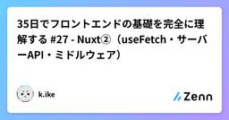
35日でフロントエンドの基礎を完全に理解する #27 - Nuxt②（useFetch・サーバーAPI・ミドルウェア）
Zennの「frontend」のフィード
この記事で学ぶこと#26 では、app/pages/ にファイルを置くとページになること、共通の枠をレイアウトにまとめること、そして Nuxt は初期設定でサーバーが HTML を作って返す（SSR）ことを curl で確かめました。ただ、作ったのは中身が固定のページだけでした。実務の画面は、ほぼ必ずサーバーからデータを取ってきて表示します。今回は Nuxt でデータを取る useFetch、Nuxt 自身の中に API を作る仕組み、そしてページを表示する前に割り込む「関所」であるミドルウェアを、手を動かして確かめます。Nuxt でデータを取る useFetch が、なぜサー...
2時間前
Astro と Cloudflare Pages で作る静的な性格診断（Big Five）の実装メモ
Zennの「frontend」のフィード
単機能の日本語ウェブサービスを、会員登録なし・サーバーに回答を送らない前提で静的配信したときのメモです。デモは seikaku-test.com（娯楽向け・非臨床）。 何を作ったか全 30 問、5 件法（1–5）枠組みは Big Five（外向性 E / 協調性 A / 誠実性 C / 神経症傾向 N / 開放性 O）採点と結果表示は ブラウザ内デプロイ先は Cloudflare Pages（dist/ 直置き）医療・臨床・人事評価には使いません。サイト側でもその免責を明示しています。 なぜ静的＋クライアント採点か登録不要を守れる（アカウント基盤が要らない）...
18時間前
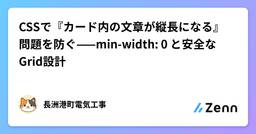
CSSで『カード内の文章が縦長になる』問題を防ぐ——min-width: 0 と安全なGrid設計
Zennの「frontend」のフィード
PC表示なのに、カードの本文だけが細い1列へ押し込まれ、数文字ごとに改行されることがあります。コンテナ全体には十分な横幅があるため、余白を減らしても直りません。この現象は、Grid/Flexの子要素の最小幅、固定カラム、内側要素の max-width が重なって起きることが多いです。 よくある崩れ方.card { display: grid; grid-template-columns: 18rem 1fr;}.card__copy { max-width: 12rem;}カード自体が広くても、本文は常に12rem以下です。ボタン列や画像が同じ行にあると、さ...
1日前
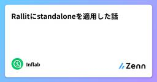
Rallitにstandaloneを適用した話
Zennの「frontend」のフィード
!この記事は2023年9月18日に執筆されたものです。こんにちは。Inflabでフロントエンド開発者をしているGOHSUEです。Rallitは、InflabがInflearnとともに開発している採用サービスです。Rallit B2CはNext.jsベースで、Dockerイメージをデプロイしてサービスを運用しています。これまで、Rallitのデプロイ用Dockerイメージはかなり大きなサイズでした（macOS環境で約4.67GB）。今回、Next.jsがサポートしているstandaloneオプションを適用したことで、Dockerイメージのサイズを最小化し、デプロイ時間を短縮できま...
1日前
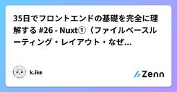
35日でフロントエンドの基礎を完全に理解する #26 - Nuxt①（ファイルベースルーティング・レイアウト・なぜNuxtか）
Zennの「frontend」のフィード
この記事で学ぶことPart 5 では、lint・型・テスト・アクセシビリティ（#25）と、作ったものの品質を守る話を続けてきました。ここまで私たちはずっと「素の Vue + Vite」で手を動かしてきました。今回からの Part 6 では、実務で出会う現場の多くが乗っている Nuxt というフレームワークに踏み込みます。まずは、Vue というフレームワークがあるのに、なぜその上にもう1つフレームワークを重ねるのか、から始めます。なぜ素の Vue ではなく Nuxt を使う現場が多いのか、理由を2つ説明できるpages/ にファイルを置くとページになる仕組み（ファイルベースル...
1日前
Trick or Type Guard? `unknown` だらけの TypeScript で生き残れ！🎃
Zennの「frontend」のフィード
Hoi hoi! 👋ホラーが怖くて仕方ないフロントエンドエンジニアの @nyaomaru です！🙀Happy Halloween!!! 🎃👻今夜は、幽霊が出るという TypeScript Project を探検してみようと思う。ゾンビ 🧟、幽霊 👻、謎のカボチャ 🎃、そして恐ろしいヴァンパイア 🧛。しかも、こいつら全員 TypeScript の Type と関係があるらしい。今回の Mission は？Type Safety を失わずに、一晩を生き残ること！ 😸ほんなら、行ってみよか〜！ 🧟 Chapter 1: 正体不明のゾンビ暗くて不気味な夜。突然、墓から何...
1日前
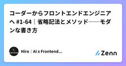
コーダーからフロントエンドエンジニアへ #1-64｜省略記法とメソッド──モダンな書き方
Zennの「frontend」のフィード
はじめに前回までで、オブジェクトを「作る」「読む」「書き換える」、そして「参照」の仕組みを見てきました。今回は、オブジェクトを短く、読みやすく書くための記法を3つ扱います。AI（Claude Code や GitHub Copilot など）が生成するコードには、{ name, age } や greet() { ... }、{ [key]: value } のような書き方が頻繁に登場します。見慣れないと「構文エラーでは？」と感じますが、ルールはどれも単純です。読めるようになると、AI のコードを見直すときの精度が上がります。この3つはいずれも ES2015 で追加された書き方...
2日前
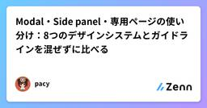
Modal・Side panel・専用ページの使い分け：8つのデザインシステムとガイドラインを混ぜずに比べる
Zennの「frontend」のフィード
Modal・Side panel・専用ページの使い分け：8つのデザインシステムとガイドラインを混ぜずに比べる TL;DRModal・Side panel・専用ページの選び方を、Apple HIG、Material、Carbon、Atlassian、USWDS、GOV.UK、NN/g、WAI-ARIA APGの8つの資料から、1つの条件ごとに出典を付けて比べた。背後を覆うかどうかは、見た目ではなく「作業中に背後の何を参照する必要があるか」で決まる。この点はほぼ全資料で一致する。複数stepの作業は、Web系の資料では専用ページ、Apple・Materialではfull-sc...
2日前
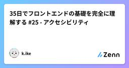
35日でフロントエンドの基礎を完全に理解する #25 - アクセシビリティ
Zennの「frontend」のフィード
この記事で学ぶこと#24 までで、lint・型・テスト・CI という「コードが正しく動くこと」を守る体制ができました。今回は品質のもう1つの軸です。正しく動くその画面は、マウスが使えない人、画面を目で見られない人、強い日差しの下でスマホを見ている人にも使えるでしょうか。これがアクセシビリティ（accessibility。長いので a11y と略されます）です。#21 で「この話は #25 で本格的に扱います」と予告した、ロールの正体もここで明かします。アクセシビリティが一部の人への特別対応ではなく、品質そのものである理由を説明できるセマンティックな HTML が機械に何を伝え...
2日前
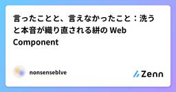
言ったことと、言えなかったこと：洗うと本音が織り直される絣の Web Component
Zennの「frontend」のフィード
小さな Web Component を集めた tiny-consoles というギャラリーを、こつこつ作っている。今回はその 07 番目、「ma-kasuri」の話。四本の日本映画のために作った、四枚の絣の布。デモ：https://tinyconsoles.vercel.app/#ma-kasuriコード：https://github.com/nonsenseblue/tiny-consoles/tree/main/components/ma-kasuri 大事なことを言わない家族の映画選んだのはこの四本。布映画一枚目成瀬巳喜男『めし』（1951...
3日前
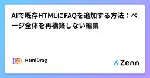
AIで既存HTMLにFAQを追加する方法：ページ全体を再構築しない編集
Zennの「frontend」のフィード
クイックアンサー：周囲のスタイルやレイアウトを壊さずに既存のHTMLページにAIでFAQセクションを追加するには、4段階の範囲限定ワークフローを実践します。**検証済み事実の整理：**元のページに記載されている確定情報のみから、訪問者が意思決定に必要な5〜6問（準備、納期、納品形式など）を抽出します。**挿入位置の境界確定：**追加したい位置の直前にあるコンテナを選択（選択数：1）し、挿入アンカーを定めます。**保護ルール付きプロンプトの実行：**既存のセクション、CSSクラス、スクリプトを一切変更しないよう指示し、AIにFAQブロックのみを挿入させます。**視覚的な微調整と...
3日前

Claude Code・Codex利用者のためのimpeccable実践ガイド｜AI生成UIの「AIっぽさ」を62の検出ルールで見つけて直す
Zennの「frontend」のフィード
AIに作らせた画面が毎回同じ見た目になる「癖」を、62本の決定論的ルールで機械検出するskill「impeccable」の日本語導入ガイド。検出CLIは実測で「癖まみれHTMLに7件の指摘→修正後0件」を確認済み（検証日2026-10-30、CLI 4.8.0）。インストール手順全文、ツール別の追加の一手、initから最初のコマンドまでの使い方に加え、筆者の環境でbundle取得がTLSエラーで失敗した切り分けと、未検証の範囲（init以降・hook・liveモード）とその再確認ポイントまで正直に書いた実測ガイド。
3日前
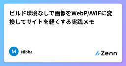
ビルド環境なしで画像をWebP/AVIFに変換してサイトを軽くする実践メモ
Zennの「frontend」のフィード
Lighthouseで「次世代フォーマットでの画像の配信」と言われ、見るとヒーロー画像が1.8MBのPNG。とはいえ小さなLPやドキュメントサイトのために、Sharpや画像CDNを導入するのは大げさです。数枚なら手作業で十分というのが今回の話です。 WebPとAVIFの使い分けWebPは主要ブラウザすべてで使え、エンコードも速く、写真ならJPEGより25〜35%ほど小さくなります。AVIFはさらに20〜30%小さくなることが多く、グラデーションや暗部に強い一方、エンコードが遅く、圧縮を強めると細部がぼやけやすいです。どちらも透過に対応しています。写真・大きなヒーロー画像：まずA...
3日前
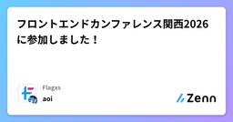
フロントエンドカンファレンス関西2026に参加しました！
Zennの「frontend」のフィード
はじめに2026年10月12日にグラングリーン大阪で開催されたフロントエンドカンファレンス関西2026に参加してきました！https://2026.frontend-conf.osaka.jp/今回のテーマは「Frontend, Unbounded. 〜フロントエンドは、みんなの話やで〜」でした。印象に残ったセッションについての概要と感想や、全体の振り返りを書いていきます。 印象に残ったセッション 二歩目のフロントエンド・ウェブアクセシビリティ（camihaさん）https://speakerdeck.com/camiha/nihome-no-furonto-en...
3日前
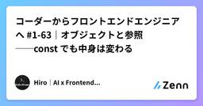
コーダーからフロントエンドエンジニアへ #1-63｜オブジェクトと参照──const でも中身は変わる
Zennの「frontend」のフィード
はじめに前回は、const で作ったオブジェクトでも、中身（プロパティ）は書き換えられることを見ました。今回は「なぜそうなるのか」を、参照という考え方で説明します。オブジェクトを = で別の変数に入れたとき、=== で比べたとき、関数に渡したとき。オブジェクトだけは、数値や文字列と動きが違う場面があります。この違いが分かると、「変えたつもりのないデータが変わっていた」というバグの原因を、自分で追えるようになります。AI（Claude Code や GitHub Copilot など）が生成するコードにも、const copy = original や if (a === b) ...
3日前
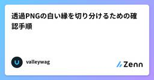
透過PNGの白い縁を切り分けるための確認手順
Zennの「frontend」のフィード
背景を削除したPNGをWebページに置くと、白い縁が見えることがあります。原因をすぐCSSと決めず、画像に残った色、透明度、配置先の背景を分けて確認すると調査しやすくなります。ここでは画像編集ライブラリに依存しない、ブラウザーでの小さな確認方法を整理します。対象は通常の画像要素で、canvasへの描画や印刷時の色管理は含めません。 確認用の表示条件を固定するまず同じファイルを明るい背景と暗い背景に置きます。片方だけで縁が目立つなら、境界の半透明ピクセルに元の背景色が混ざっている可能性があります。ただし、それだけで原因が確定するわけではありません。画像の実寸表示と縮小表示も比べ、拡大...
3日前
Code generator開発記（Part 2）
Zennの「frontend」のフィード
!この記事は2023年7月3日に執筆されたものです。こんにちは。Inflabのフロントエンドエンジニア、Lucasです。前回の記事では、code generatorの必要性と、自前で実装するに至るまでの悩みを共有しました。今回は、code generatorをはじめ、schema validator、type guardをどのように実装したのかを簡単にご紹介したいと思います。最初にお伝えしておくと、これはとてもシンプルなアイデアで、実装に複雑な技術は必要ありません。その前提で読み進めていただければと思います。 1. 目標と必要な機能まず、前回の記事で立てた目標について改め...
3日前
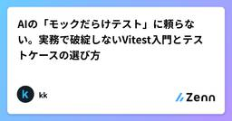
AIの「モックだらけテスト」に頼らない。実務で破綻しないVitest入門とテストケースの選び方
Zennの「frontend」のフィード
はじめにフロントエンドの実務で「何をどこまでテストすべきか」と悩むことは多いでしょう。生成AIの活用でテスト作成は容易になりましたが、AI任せにするとモックだらけの形骸化したテストになりやすいという課題もあります。本記事では、Vitestの基礎やモックの適切な使い分けに加え、ISTQBの原則を基にしたテストケースの選び方、Vue3での実践的単体テストを解説します。保守性や網羅性を見直したい方に役立つ内容です。 テストの目的項目補足不具合の検出---変更による不具合の防止---仕様の明確化期待する動作が曖昧な箇所を見つけ、関係者間で認識を合...
3日前
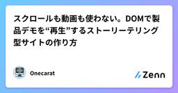
スクロールも動画も使わない。DOMで製品デモを“再生”するストーリーテリング型サイトの作り方
Zennの「frontend」のフィード
『読むサイト』から『体験するサイト』へ。ストーリーテリング型Webデザインに挑戦【実装編】!この記事は2本立ての「実装編」です。なぜスクロール型や動画ではなく、この形にしたのか。そこに至るまでの試行錯誤は「考え方編」で紹介しています。https://zenn.dev/onecarat_tech/articles/12834afc1cb5d3 はじめに個人で開発しているローカルAIテキストエディタ「OnecaratEditor」の公式サイトをリニューアルしました。https://onecarat.dev/今回目指したのは、製品の機能を文章で説明するだけではなく、実際...
3日前
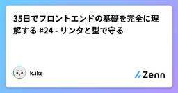
35日でフロントエンドの基礎を完全に理解する #24 - リンタと型で守る
Zennの「frontend」のフィード
この記事で学ぶこと#20 から #23 で、関数・コンポーネント・E2E というテストの3層が揃いました。ただ、テストには共通の性質があります。「書いた分しか守ってくれない」ことと、「動かすまで分からない」ことです。今回はその手前、コードを動かす前に、書いた時点で問題を見つける層を足します。道具は ESLint と、#4〜5 からの付き合いである TypeScript。最後に、これら全部の検査を push のたびに自動実行する CI という仕組みにつなげます。ESLint が何者で、テスト・TypeScript と何を分担しているかを説明できるflat config を読み書...
3日前